〔실사 컷 1〕 저녁 현장 사무실, 공정표의 빨간 줄을 가리키는 PM의 뒷모습
"골조가 크리티컬이다. 야간 작업 넣어서 당기자."
공정이 늦어서 약속을 놓치는 것이 아니다. 준공일을 좌우하는 작업이 다른 곳으로 옮겨 간 것을 늦게 알아서 놓친다.
ChronOS(크로노스)는 채팅창이 아니라 일정 OS다. 에이전트가 스케줄, 지연 기록, 비교판 창을 직접 열어 가며 일하고, 15년차 PM이 변동마다 하던 세 가지를 대신 한다. 다시 보고, 따져 보고, 먼저 묻는다.


이해를 돕기 위한 연출 이미지(AI 생성)
골조가 크리티컬이었다. 야간 작업까지 넣어 골조를 앞당겨 끝냈다. 그런데 다음 외장 작업을 시작할 수 없었다. 그사이 커튼월 공장 제작이 늦어져 있었고, 준공일을 좌우하는 작업은 이미 골조에서 커튼월로 옮겨 가 있었다.
일정은 약속이다. 마지막 날짜는 발주처, 고객, 팀과 맺은 약속이다. 그리고 일정은 매 순간 바뀐다. 같은 3일 지연이라도 여유가 있는 작업이면 준공은 그대로고, 준공일을 좌우하는 작업이면 준공도 늦는다. 변동이 쌓이면 좌우하는 작업 자체가 바뀐다. 오른쪽 그림처럼 준공이 그대로라 안심하는 바로 그때 옮겨 간다.
공정표를 손으로 다시 맞추고, 반영은 주간 회의 때 몰아서 한다. 〔PM 확인〕
마지막으로 본 크리티컬을 당긴다. 옮겨 갔으면 헛돈이다. 〔PM 확인〕
전화를 돌리고, 통화 내용은 남지 않는다. 〔PM 확인〕
| 해야 할 일 | 사람 | P6 등 공정 도구 | 엑셀 | AI 챗봇 | ChronOS |
|---|---|---|---|---|---|
| 변동마다 다시 계산 | 주간 회의 때 | ○ | × | 날짜 틀림 | ○ |
| 옮겨 간 것을 알림 | 놓침 | × | × | × | ○ |
| 그곳의 바깥 위험 | 감 | × | × | 출처 없음 | ○ |
| 담당자 확인과 기록 | 전화, 기록 없음 | × | × | × | ○ |
계산만 빠른 도구는 이미 있다. 빠져 있는 것은 계산 다음이다. 어디를 봐야 하는지 알려 주고, 그곳에 무엇이 다가오는지 찾고, 담당자에게 묻는 일이다. 건설만의 문제도 아니다. 약속이 있고 작업이 이어져 있고 변동이 잦은 일이면 구조가 같다(4-2).
변동마다 코드가 영향을 재고 관리 포인트를 다시 뽑는다. 바뀌었으면 「관리 포인트가 바뀌었습니다」 카드로 알린다.
「당겨도 소용 있나」. 당긴 일수 가운데 준공에 반영되는 일수와, 그다음 좌우하는 작업을 코드가 계산한다.
바깥 위험을 출처와 함께 찾고, 담당자에게 문자와 AI 전화로 묻고, 답마다 근거가 된 말을 남긴다. 결정은 사람이 한다.
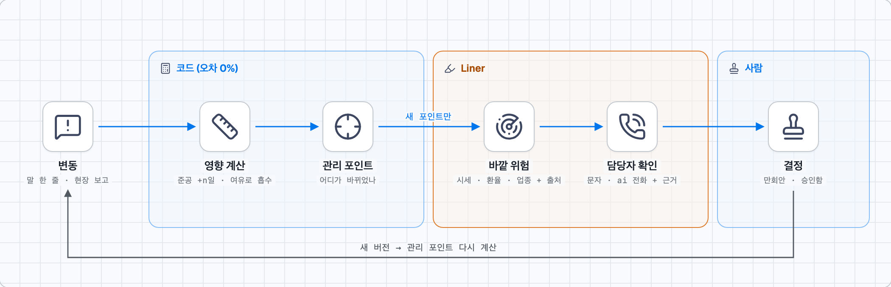
변동이 들어오면 코드가 영향을 재고 관리 포인트를 다시 뽑는다. 새로 생긴 포인트에 대해서만 Liner 가 바깥 위험을 찾고 담당자 확인을 돕는다. 사람이 결정하면 새 버전이 되고 한 바퀴가 다시 돈다. 날짜는 코드만 계산한다. Liner 는 판단하고, 찾고, 쓴다. 일정은 사람이 승인해야 바뀐다.
AI 에이전트는 보통 채팅창 하나다. 답이 글로 돌아오고, 사람이 그 글을 들고 다른 프로그램으로 옮겨 간다. ChronOS 는 반대로 만들었다. 일하는 책상 전체를 OS 로 만들고 그 책상을 에이전트에게 맡겼다.

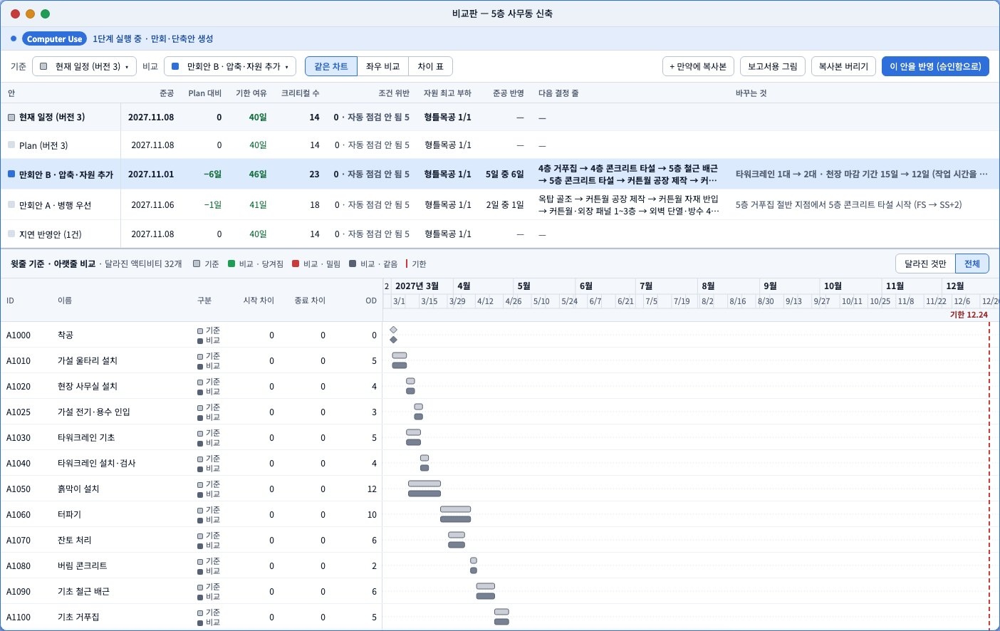
"커튼월 공장 제작이 3일 늦어졌어"라고 말하면 창이 차례로 앞으로 나온다. 사람은 창이 열리고 숫자가 바뀌는 것을 눈으로 따라가다가 마지막에 승인만 누른다. 화면 설정에서는 이 방식을 「스테이지 창 전환 · 포커스 추적」이라고 부른다. 컴퓨터를 사람처럼 다루는 Computer Use 방식이다.
ui.open_window)로 정확히 연다. 그래서 빠르고, 엉뚱한 곳을 누르지 않고, 현장 관리자에게 없는 창은 열지 못하는 식으로 권한도 지킨다. 조용히 쓰고 싶으면 워크플로우 창만 보이게 하거나 끌 수 있다.
에이전트가 한 일을 글로 설명받지 않고 화면에서 본다. 일정처럼 책임이 큰 일에서는 이것이 신뢰다.
사람이 스케줄 창에서 고른 작업을 에이전트도 본다(「보는 중: 스케줄 · A1404」). 같은 창을 둘이 쓴다.
새 앱은 폴더 하나와 도구 등록으로 붙고, 붙는 순간 에이전트가 쓸 수 있다(4-3).
에이전트는 요청을 받고 그 자리에서 워크플로우를 짜면서 일한다. 워크플로우 창에는 단계가 하나씩 생긴다. 작업을 찾고, 지연을 기록하고, 영향을 계산하고, 관리 포인트를 확인하는 식이다.
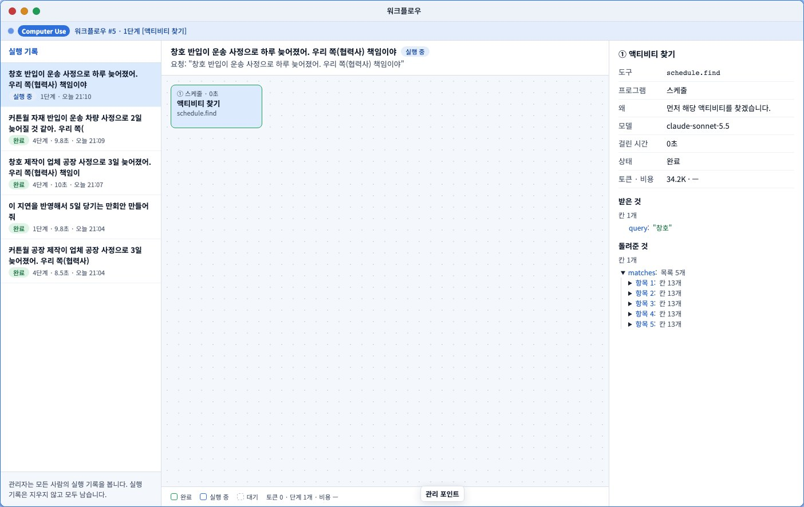
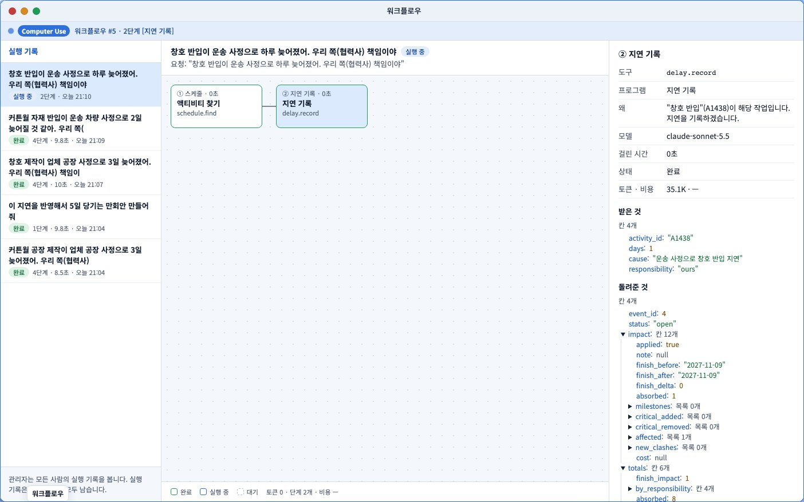
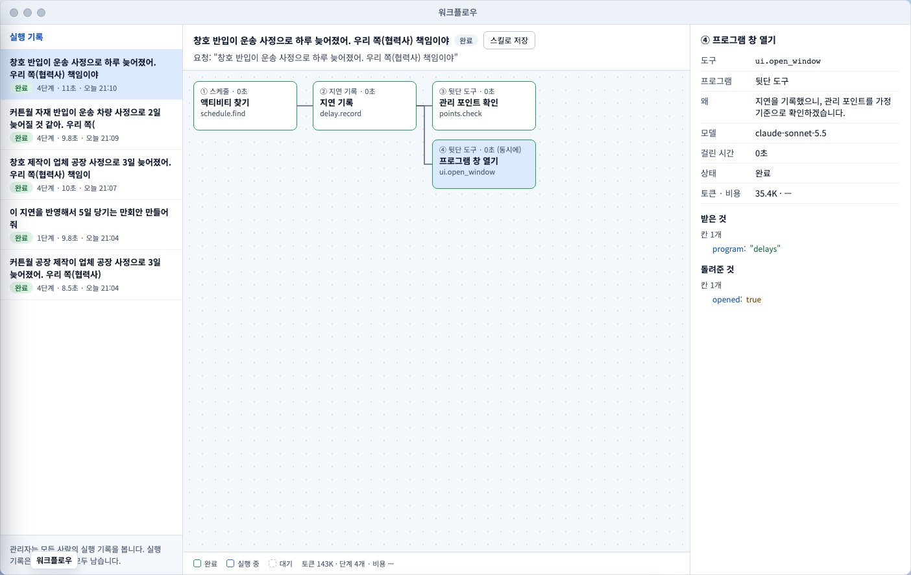
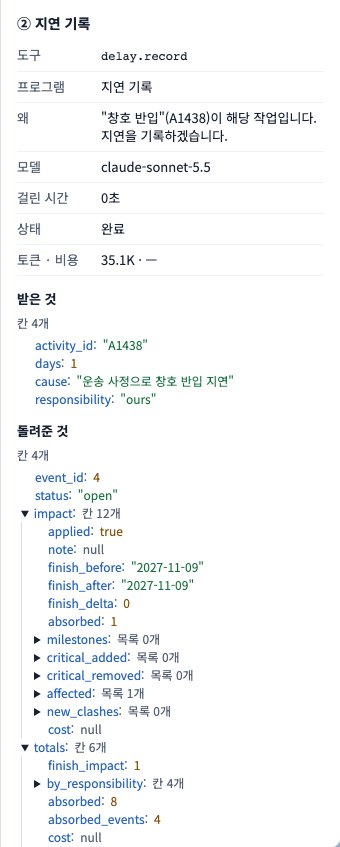
단계를 누르면 어떤 도구를 왜 썼는지, 무엇을 받아 무엇을 돌려줬는지, 어느 모델이 얼마를 썼는지가 나온다. 화면 위쪽 진행 띠에도 같은 단계가 흐른다.
잘 된 워크플로우는 [스킬로 저장]한다. 다음에 비슷한 요청이 오면 에이전트가 그 순서를 꺼내 쓴다. 베테랑의 일하는 순서가 한 번 쓰고 사라지지 않고 회사에 남는다.
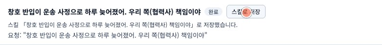
요청을 알아듣고, 질문지를 만들고, 일정 초안을 쓰고 고치고, 만회안을 설명하고, 연락 글과 통화 요약을 쓴다. 사진도 읽는다. 자주 도는 감시는 cost, 대화는 balanced, 무거운 판단은 quality 로 Router 를 나눠 써서 쉬지 않고 돌아도 비용이 버틴다.
약속을 바꾸는 결정에는 출처가 있어야 한다. 새 관리 포인트가 생기면 그 작업의 자재 시세와 환율(Premium Data), 업계 소식(MCP), 근거가 된 문장(Search Agent)을 찾는다. 법령과 기준도 여기서 찾는다. 새 포인트에만 찾으니 호출이 적다.
| Liner API | 실측 | Liner API | 실측 |
|---|---|---|---|
| Model · Router | 22/22회 정상(도구 호출, strict JSON) | MCP 법령 · 업체 | 5/5회 정상 |
| Search Premium Data | 구리·알루미늄·철광석 30개월, 원·달러 | Visualization | 차트 숫자 15/15 일치 |
| Search Agent | 출처 문장과 링크 | Embeddings | 자료함 뜻 검색 |
Liner 가 아닌 것: 날짜 계산은 코드, 날씨는 기상청, 실시간 통화 음성은 Gemini Live(지연 시간 때문), 문자와 전화 통로는 한국AI통신.


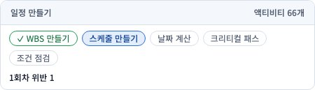
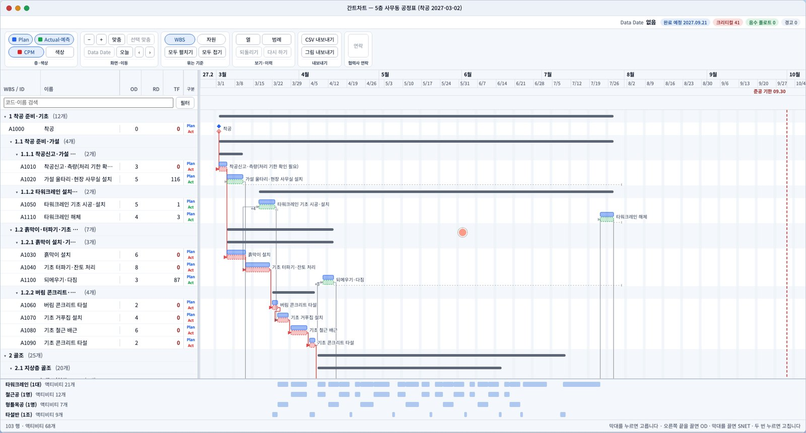
에이전트는 작업 목록과 기간과 선후 관계를 쓴다. 날짜는 쓰지 않는다. 날짜는 코드가 계산하고, 계산한 결과가 규칙을 어기면(동절기 타설 금지, 크레인 겹침 등) 어긴 작업을 지목해 다시 짜게 한다. 시연 촬영에서는 네 번 가운데 세 번이 한 번에 통과했고, 한 번은 코드가 위반 1건을 잡았다.
처음 보는 분야라도 된다. 용어와 작업 계층과 위험 규칙을 그 자리에서 만들어 같은 엔진에 태운다. 협력사가 보낸 엑셀 공정표를 붙이면 빈칸만 물어서 초안으로 가져온다.
시연 일정 「5층 사무동 신축」(가상). 6월 말, 준공 2027-11-08, 계획대로 가는 중. 지금 준공일을 좌우하는 작업은 5층 골조와 옥탑 골조. 숫자는 모두 엔진이 계산했고 자동 시험이 고정한다.
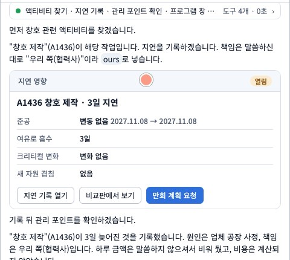

두 번째 지연에서도 준공은 그대로다. 사람은 여기서 안심한다. 에이전트는 여기서 카드를 띄운다.
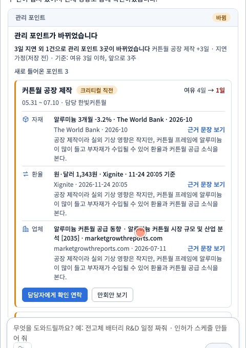
새로 생긴 포인트에 대해서만 Liner Search 가 움직인다.
6개월이 넘은 글은 쓰지 않고, 찾지 못하면 「바깥 자료 없음」으로 둔다. 숫자를 지어내지 않는다. [근거 문장 보기]를 누르면 출처가 된 보고서 문장이 열린다(Search Agent).
〔갱신: 촬영 시점 값〕
에이전트가 화면 밖의 사람과 직접 이야기한다. [담당자에게 확인 연락]을 누르면 물어볼 것을 써 오고, 사람이 고친다. 여기서는 「2교대 가능 여부」를 더하고 말하지 않을 것에 「금액, 다른 업체」를 적었다.
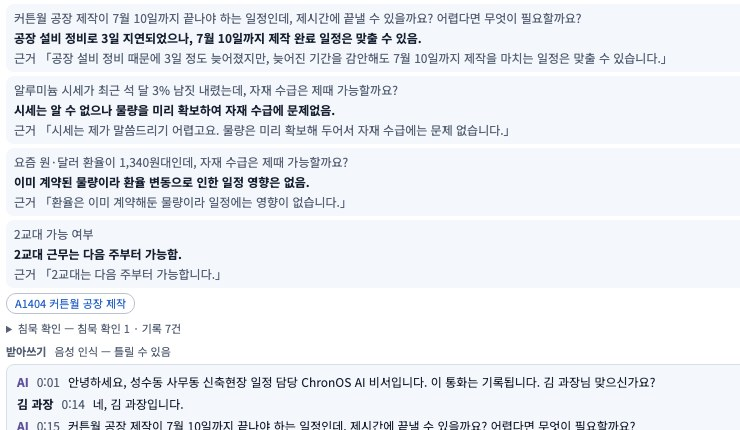
무엇을 묻고 무엇을 말하지 않을지 사람이 확인하고 고친다. 기본값은 「승인 받기」.
AI 모델은 전화번호를 보지 않는다. 연락처 id 와 이름만 보고, 번호는 코드가 붙인다.
통화가 끝나면 받아쓰기와 답을 대조한다. 근거 없는 답은 사실로 기록하지 않는다.
문자도 같은 길로 나가고, 협력사가 걸어 오는 전화도 에이전트가 받아 「확인할 보고」로 남긴다. 나가는 연락은 시험 모드, 근무시간, 상한, 권한, 중복까지 여섯 가지 검사를 통과해야 나간다.
시연 통화 소리는 AI 두 세션을 이은 시험 통화 녹음이다(화면에 「시험 통화 — 전화망 없음」 표시). 실제 전화망 통화도 따로 시험해 첫 응답 약 1.1초, 받아쓰기, 도구 호출, 걸려 온 전화 받기를 확인했다.
준공은 2027-11-08 에서 11-06 으로 하루만 당겨진다. 그다음 준공일을 좌우하는 작업은 커튼월 공장 제작 → 자재 반입 → 커튼월 설치다.
같은 5일이 커튼월이 늦어지기 전에는 4일의 값어치였다. 지금은 1일이다.
1-1 의 그 밤에 내가 몰랐던 것을, 에이전트는 야간 작업을 넣기 전에 알려 준다. 계산은 코드가 하고, 일정은 바꾸지 않는 확인용이다.

만회안 B 는 크레인을 1대에서 2대로, 천장 마감을 15일에서 12일로, 커튼월 설치를 10일에서 8일로 줄여 준공을 6일 당긴다. 비교판에서 다른 안과 견주고 승인함에서 사람이 승인한다. 승인하면 새 버전이 되고 에이전트는 관리 포인트를 다시 뽑는다. 한 바퀴가 닫힌다.
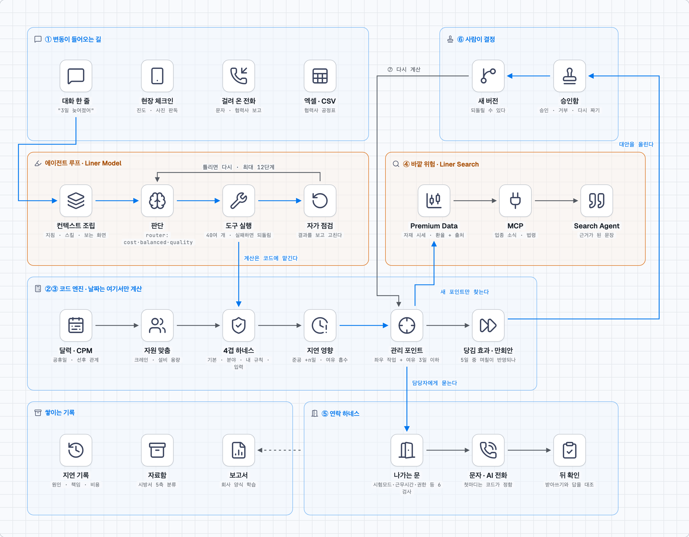
에이전트 루프는 틀리면 다시 돈다(최대 12단계). 날짜가 필요한 순간마다 코드 엔진에 맡기고, 엔진은 4겹 하네스(기본, 분야, 내 규칙, 입력)로 규칙을 확인한다. 관리 포인트가 새로 생기면 그 작업에 대해서만 Liner Search 가 움직인다. 연락은 여섯 가지 검사를 통과해야 나가고, 통화가 끝나면 받아쓰기와 답을 대조한다. 사람이 승인하면 새 버전이 되고 관리 포인트를 다시 계산한다.

| 영역 | 동작함 | 설계만 |
|---|---|---|
| 일정 엔진 | CPM, 자원 맞춤, 지연 영향, 만회안, 관리 포인트, 당김 효과 | - |
| 에이전트 | 질문지, 생성-점검-고침, 워크플로우와 스킬 저장, 도구 40여 개, Computer Use 창 전환 | 스킬 목록 화면 |
| 안전장치 | 4겹 하네스, 승인함, 버전, 연락 하네스, 사람 판독 넘기기 | 팀 단위 세부 권한 |
| 근거 | 자료함, Liner 검색, 바깥 위험, 출처 문장 | 스캔 PDF 인식 |
| 현장·연락 | 현장 점검, 문자, AI 전화 걸기와 받기, 여러 언어 | 카카오 알림톡 실발송 |
| 가져오기·보고 | 엑셀·CSV, 월간·분기 보고서(회사 양식 학습) | P6·MS Project 변환 |
시연 장면은 실제 Liner 로 두 번 리허설했다. 사진 판독은 공개 라이선스 현장 사진 10장으로 두 모델을 견줘, 숫자를 지어내지 않는 쪽을 골랐다.
300억 원 공사에서 하루는 지체상금 1,500만 원이다. 옮겨 간 것을 일주일 일찍 알면 그 일주일 동안 싸게 쓸 수 있는 방법(병행, 순서 바꾸기, 협력사와의 조율)이 아직 남아 있다.
엔진과 한 바퀴는 그대로 쓰고, 분야마다 볼 바깥 자료만 설정에서 켜고 끈다. 처음 보는 분야는 용어, 작업 계층, 위험 규칙을 즉석에서 합성한다. 색칠한 칸은 시연한 분야, ●는 참가자가 직접 겪은 분야다.
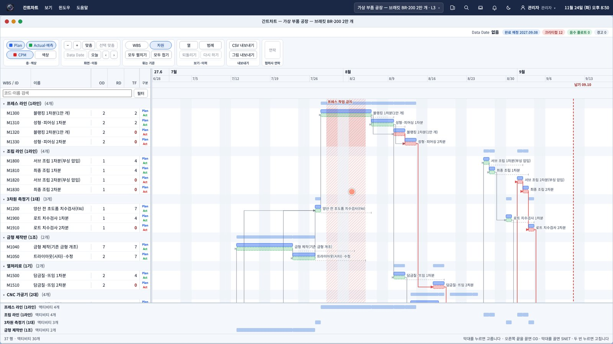
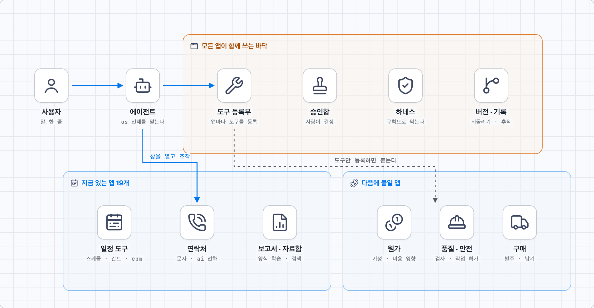
현장의 일은 일정 하나로 끝나지 않는다. 늦어지면 돈이 달라지고, 검사 날짜가 밀리고, 발주를 당겨야 한다. OS 로 만들었기 때문에 이런 도구를 같은 책상에 앱으로 붙일 수 있다.
"이 만회안은 얼마가 더 드나"를 같은 대화에서 묻는다.
관리 포인트 작업의 검사와 작업 허가를 함께 본다.
장납기 자재의 발주와 납기가 관리 포인트에 이어진다.
새 앱은 승인함과 하네스와 버전을 처음부터 물려받는다. 에이전트는 새 도구를 등록부에서 읽고 바로 쓴다. 에이전트가 똑똑해질수록, 앱이 늘어날수록 한 사람이 맡을 수 있는 일의 폭이 넓어진다.
손장호, 건설·플랜트 PM 15년차 (2012년부터)
| Liner API 핵심 사용 (제4조 1항) | 한 바퀴의 판단에 Liner Model, 근거에 Liner Search 를 쓴다. |
| 기간 내 신규 (제4조 2항) | 11-19 새 저장소에서 처음부터 만들었다. |
| 가상 데이터 (제5조) | 일정, 계정, 협력사, 주소록은 가상이고 사진은 공개 라이선스 자료다. 실사 컷은 AI 생성 연출 이미지다. 시연 통화는 시험 통화 녹음이며 실제 번호로 걸지 않았다. |
| 보안 | API 키는 암호화해 저장하고 끝 4자리만 보인다. 전화번호와 키는 로그에 남기지 않는다. 커밋 이력 비밀 검사 통과 〔갱신〕. |
backend/app/core/ | calendar.py 근무일 배열과 이분 탐색 · cpm.py 위상 정렬, FS/SS/FF/SF + lag, ES/EF/LS/LF, TF/FF · resources.py 일일 용량 맞춤 · shorten.py 병행, 압축, 자원 추가 만회안 · delay.py 지연 전후 크리티컬 비교 · 관리 포인트와 당김 효과 〔갱신: 최종 파일 이름〕 |
backend/app/harness/ | 기본 < 분야 < 내 규칙 < 입력 순으로 경합 판정 |
backend/app/agent/ | ReAct 루프, 도구 실행 전 커밋과 실패 시 되돌림, 자가 점검, 스킬 매칭, 워크플로우 기록 |
backend/app/outreach/ | 나가는 문(시험 모드 → 차단 → 근무시간 → 상한 → 권한 → 중복), 들어오는 문(번호로 등급), 통화 하네스 |
frontend/src/ | React OS 셸, 앱 19개, PC · 태블릿 · 폰, 스테이지 창 전환 |